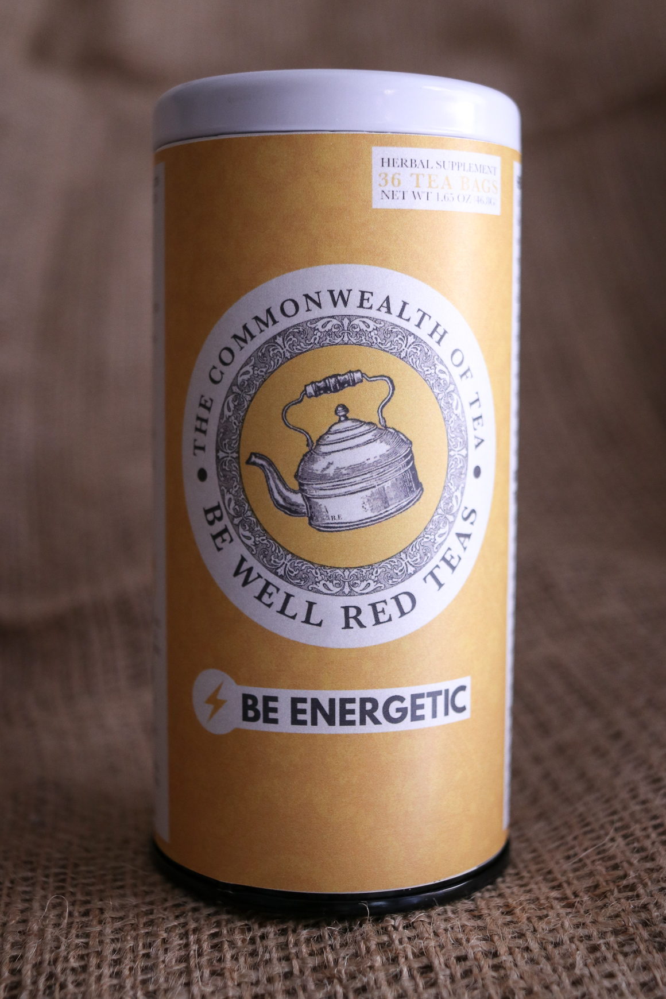
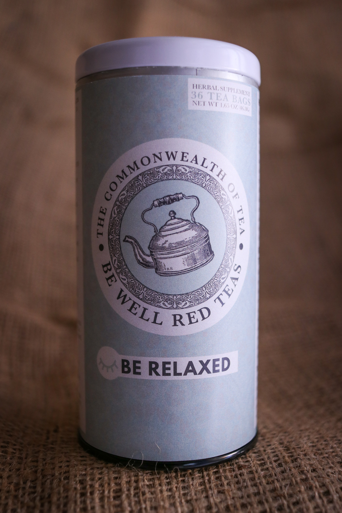
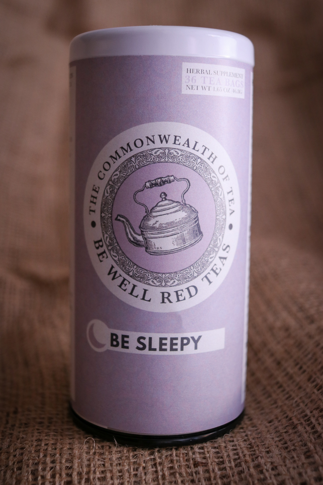
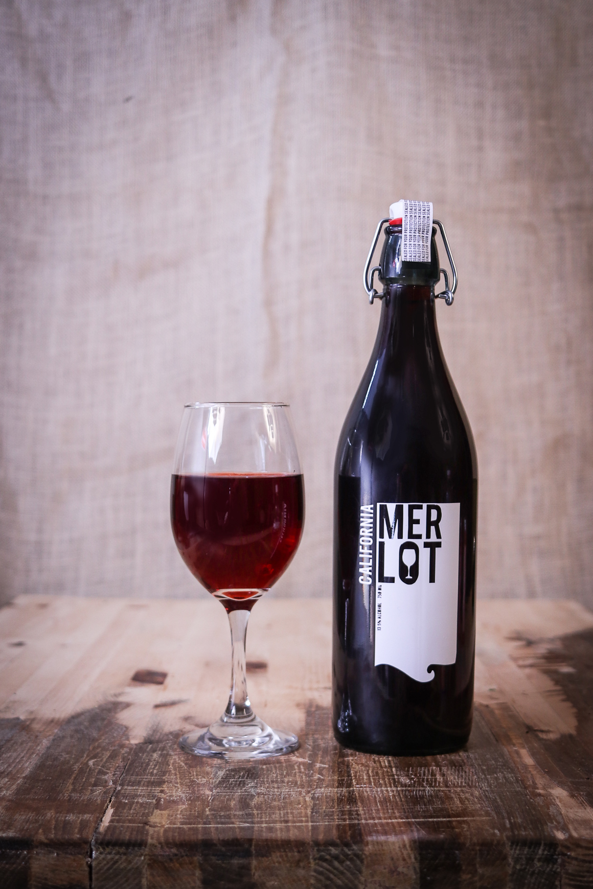
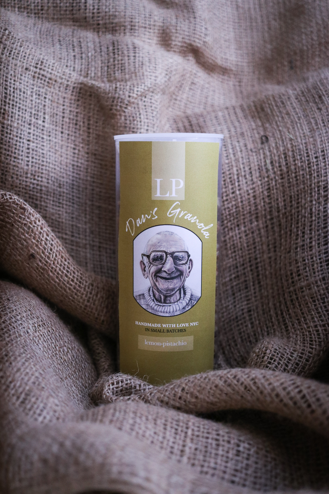
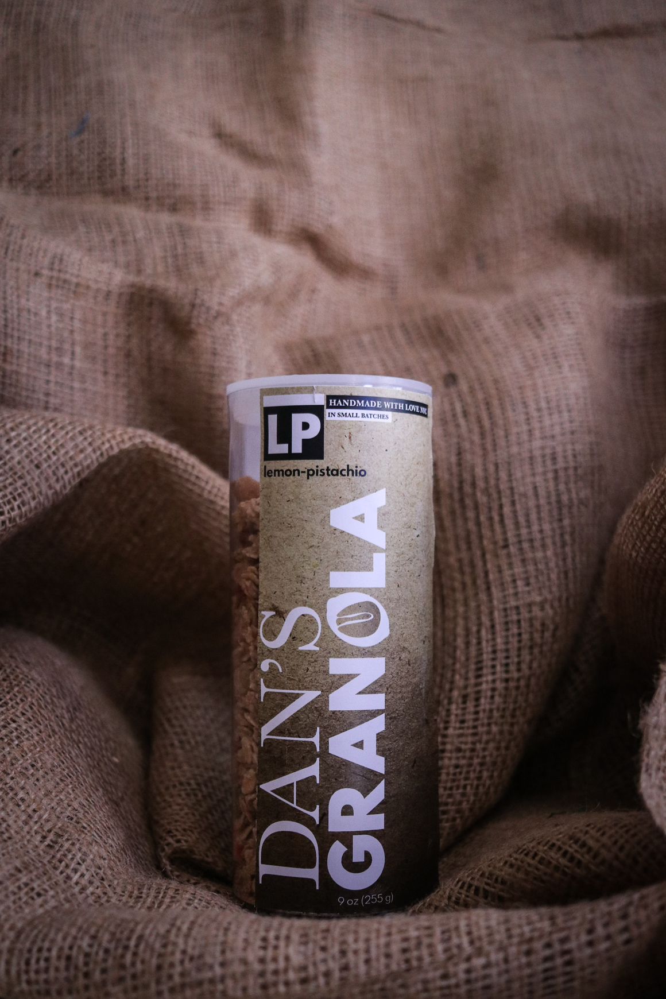

Designer as Mariah
DE·SIGN: A Glorified blueprint, an outline, a draft, a representation, a prototypical proposal. GRAPH·IC DE·SIGN: a skill or technique of text to image, do the two dare intertwine?

Curatorial Statement
Where does the line between Designer and Graphic Designer lie? Am I not the creator of the blueprints of ideas that enter your mind? Do I not represent a pototypical proposal of a sort? Designing as Mariah is difficult sometimes because designing as Mariah consists of sometimes not being a designer at all.
The Things That Conflict Me
Photography
Talent
Motivation
G
follow
follow
R
the
the
I
stupid
stupid
D
grid
grid
Walk like this, talk like this, design like this & more importantly design like that.
- What They Want
- STRUCTURE
- FORM
- BALANCE
- TOGETHERNESS
-
ALL AT ONCE
AND PERFECTLY.
- What I Want
- MEANING
- AN AH-HAH MOMENT
- FREEDOM
- LESS CONSTRAINT
-
WHEN I WANT
AND HOW I WANT.
The things I fear:
+FAILURE. It's just so easy not to suceed.
+SUCESS. Will I suceed on the things that bring me joy or just the things that are generically good?
+FEAR. Designing as Mariah means doubting yourself before youve started.
Some of the things I'm proud of.





